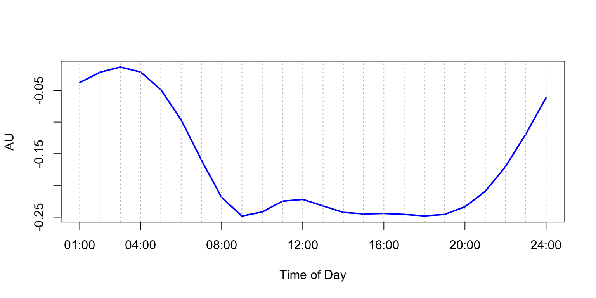
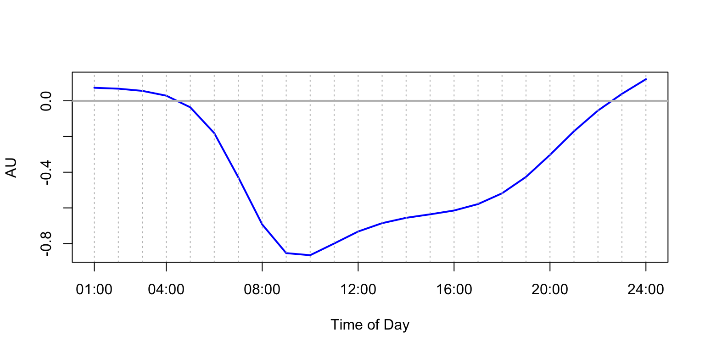
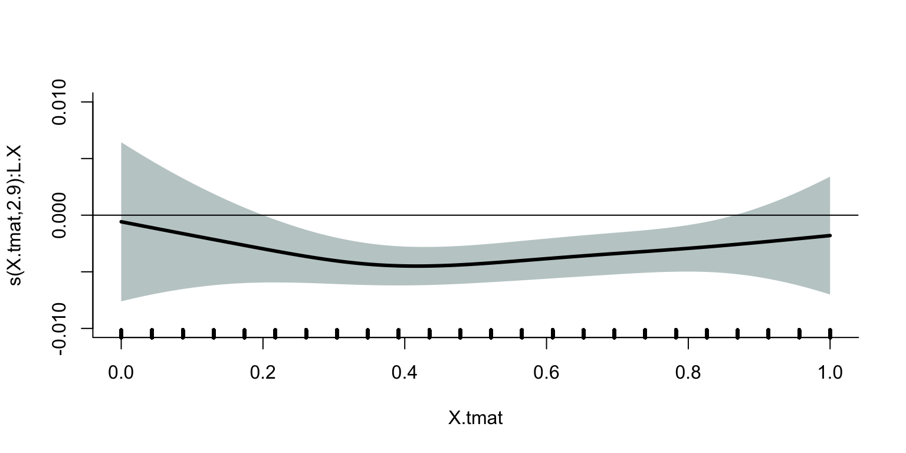

This page contains a combination of traditional lecture materials (slides) and code demonstrating the relevant methods. The short course will proceed by working through both. We will use several recent packages in our examples; see the About page for information about the package versions.
library(tidyverse)
library(grpreg)
library(splines)
library(refund)
library(refund.shiny)
library(reshape2)
library(plotly)In this section we’ll use the NHANES_JSM_2019 to illustrate scalar-on-function regression (sofr).
So far, we treated diurnal profiles in unsupervised way by learning diurnal variation via fPCA
Multiple linear regression: \[ y_i = \mathbf{x}_i^T\boldsymbol{\beta} + \epsilon_i \]
Linear functional regression equivalents:
Let us assume that our data contains
\[ \left[y_{i},z_{i},\{x_{i}(t), t = 1,\ldots, 24\}\right], \qquad i = 1,\ldots, n, \]
where
Naive multiple regresion model (MLR) can be written as
\[ y_{i} = \mu +z_{i} \gamma + \sum_{t=1}^{24}x_{i}(t)\beta(t)\mathrm{d}t + \epsilon_{i}, \qquad i = 1,\ldots, n \]
SoFR is a functional equivalent of MLR model can be written as
\[ y_{i} = \mu +z_{i} \gamma + \int_1^{24}x_{i}(t)\beta(t)\mathrm{d}t + \epsilon_{i}, \qquad i = 1,\ldots, n \]
SoFR employs smoothness and reduce the actual number of paramaters that needs to be estimated.
For example, in our NHANES example, after we apply fPCA to the diurnal profiles, we can work with 3 uncorrelated scores \(\xi_{i1}, \xi_{i2}, \xi_{i3}\) that jointly preserve roughly 70% of total variation.
We will consider three SoFR approaches.
Using fPCA, we can decompose functional predictors \(x_i(t)\) as
\[x_i(t)\approx \sum_{k=1}^K\hat{\phi}_k(t)\hat{\xi}_{ik}.\]
Then, the functional regression parameter \(beta(t)\) is modelled as a linear combination of the functional PC
\[\beta(t)\approx \sum_{k=1}^K\hat{\phi}_k(t)\beta_k.\]
Using orthogonality of the functional principal components, SoFR model becomes a regular MLR
\[ y_{i} = \mu +z_{i} \gamma + \int_1^{24}x_{i}(t)\beta(t)\mathrm{d}t + \epsilon_{i} =\mu +z_{i}\gamma +\sum_{k=1}^K\hat{\xi}_{ik}\beta_k + \varepsilon_i,\qquad i = 1,\ldots, n \] where functional PC scores \(\hat{\xi}_{ik}\) are known and orthonormal and \(\beta = (\beta_1,\ldots, \beta_K)\) are corresponding unknown scalar regression coefficients.
Thus, the problem of estimating functional regression parameter \(\beta(t)\) is reduced to the problem of estimaing scalar regression parameters \((\beta_1,\ldots, \beta_K)\).
In this example, we perform SoFR of BMI (continuous outcome) on fPC1, fPC2, fPC3 scores adjusted for Age and Gender.
load("./DataCode/NHANES_JSM_2019.RData")
hTAC = as.matrix(hTAC)
n = dim(hTAC)[1] # number of participants
hTAC.demean = hTAC - matrix(apply(hTAC, 2, mean), n, 24, byrow = TRUE)
## calculate fPCs
s = fpca.sc(hTAC, var = TRUE, npc = 6)
x.mean = s$mu
phi.fpca = s$efunctions
lambda.fpca = s$evalues
sigma.fpca = s$sigma2
## fPCs
fPC1 = phi.fpca[,1]
fPC2 = phi.fpca[,2]
fPC3 = phi.fpca[,3]
## fPCs scores
fPC1.score = as.matrix(hTAC.demean) %*% fPC1
fPC2.score = as.matrix(hTAC.demean) %*% fPC2
fPC3.score = as.matrix(hTAC.demean) %*% fPC3
## fit linear model with BMI as the outcome and PC1, PC2, PC3 as predictors
fit.1 <- lm(scale(BMI) ~ scale(Age) + Male + scale(fPC1.score) + scale(fPC2.score) + scale(fPC3.score))
summary(fit.1)$call
## lm(formula = scale(BMI) ~ scale(Age) + Male + scale(fPC1.score) +
## scale(fPC2.score) + scale(fPC3.score))
summary(fit.1)$coefficients
## Estimate Std. Error t value Pr(>|t|)
## (Intercept) 0.09493530 0.02388346 3.974940 7.186352e-05
## scale(Age) -0.20302387 0.01803493 -11.257261 6.894190e-29
## Male -0.18864921 0.03400964 -5.546933 3.129950e-08
## scale(fPC1.score) 0.17990275 0.01748004 10.291898 1.749784e-24
## scale(fPC2.score) -0.05961699 0.01732641 -3.440816 5.869667e-04
## scale(fPC3.score) 0.04144858 0.01696913 2.442587 1.463311e-02Note that the fPCs scores are uncorrelation and normalized, so the magnitude of the estimated coefficients is interpretable.
We can now calcuale the functional regression parameter \(\hat{\beta}(t)\) as a linear combination of the statistically significant fPCs scores.
## functional regression coefficient
beta <- fPC1*summary(fit.1)$coefficients[4,1] + fPC2*summary(fit.1)$coefficients[5,1] + fPC3*summary(fit.1)$coefficients[6,1]
plot(1:24, beta, ylim = c(-0.3, 0), xaxt = "n", xlab = "Time of Day", ylab = "AU", lwd = 2, col = "blue", type = "l")
axis(1, at = c(1, 4, 8, 12, 16, 20, 24), labels = c("01:00", "04:00", "08:00", "12:00", "16:00", "20:00", "24:00"))
abline(h = 0, col = "gray", lwd = 2)
abline(v = 1:24, col = "gray", lty = "dotted")
Statistical inference now can be done using the same techniques as in MLR.
The fPCA trick can be applied in the same way in a wider class of models. The next shows how this trick can be used within Generalized Linear Models.
In this example, we fit a logistic regression of CHF (binary outcome) on fPC1, fPC2, fPC3 scores adjusted for Age, BMI, and Gender.
fit.2 <- glm(CHF ~ scale(Age) + scale(BMI) + Male + scale(fPC1.score) + scale(fPC2.score) + scale(fPC3.score), "binomial")
summary(fit.2)$call
## glm(formula = CHF ~ scale(Age) + scale(BMI) + Male + scale(fPC1.score) +
## scale(fPC2.score) + scale(fPC3.score), family = "binomial")
summary(fit.2)$coefficients
## Estimate Std. Error z value Pr(>|z|)
## (Intercept) -3.28054544 0.13036012 -25.1652530 9.622512e-140
## scale(Age) 0.35837116 0.08488556 4.2218154 2.423426e-05
## scale(BMI) 0.38489030 0.06893231 5.5835978 2.355931e-08
## Male 0.46239602 0.15581873 2.9675253 3.002076e-03
## scale(fPC1.score) 0.50904172 0.08112814 6.2745393 3.506711e-10
## scale(fPC2.score) -0.07335683 0.08347847 -0.8787516 3.795360e-01
## scale(fPC3.score) 0.09564191 0.08299519 1.1523789 2.491654e-01Functional regression parameter \(\beta(t)\) is estimated as a linear combination of statistically significant fPCs scores
beta <- fPC1*summary(fit.2)$coefficients[5,1]
plot(1:24, beta, xaxt = "n", xlab = "Time of Day", ylab = "AU", lwd = 2, col = "blue", type = "l")
axis(1, at = c(1, 4, 8, 12, 16, 20, 24), labels = c("01:00", "04:00", "08:00", "12:00", "16:00", "20:00", "24:00"))
abline(h = 0, col = "gray", lwd = 2)
abline(v = 1:24, col = "gray", lty = "dotted")
Major advantage of fPCA regression: straightforward to implement.
Major disadvantages of fPCA regression:
This approach is similar to fPCA regression. The major difference is that the functional (smooth) basis \(\{B_k(t)\}_{k=1}^K\) has to be prespecified. Once a basis chosen, the regression parameter can be expended as \(\beta(t) = \sum_{k=1}^K B_k(t)\theta_k\).
Then, the main SoFR model can be written as
\[\int_1^{24} x_i(t)\beta(t)\mathrm{d}t = \sum_{k=1}^c \theta_k \int_1^{24} x_i(t)B_k(t)\mathrm{d}t =\sum_{k=1}^c \theta_k\tilde{x}_{ik},\qquad i = 1,\ldots, n\]
where \(\tilde{x}_{ik} = \int_1^{24} x_i(t)B_k(t)\mathrm{d}t\) and \(\tilde{\mathbf{x}}_i = (\tilde{x}_{i1},\ldots, \tilde{x}_{ic})^T\).
Thus, we again reduced the problem to a standard MLR model
\[ y_i = \mu +z_{i} \gamma + \tilde{\mathbf{x}}_i^T\boldsymbol{\theta} + \epsilon_i, \qquad i = 1,\ldots,n \]
Now, the model can be fitted with standard regression methods.
Both approaches that we have considered so far cannot automatically tune in to choose an appropriate level of smoothness. For example, the second approach would only allow to include a large number of basis functions that would result in an unnecessarily large number of parameters. The approach we will consider next addresses this problem.
Penalized least squares adds a penalty term that both controls the level of smoothness and the effective number of fitted parameters.
\[ pLS = \sum_{i=1}^n \left[y_i - \mu - z_{i} \gamma -\int_1^{24} x_i(t)\beta(t)\mathrm{d}t \right]^2 + \lambda \int_1^{24} \left[D^2 \{\beta(t)\}\right]^2\mathrm{d}t \]
So, we can apply the functional basis expansion of the functional regression parameter \(\beta(t)\), as we did in Approach #2, to get
\[ pLS = \sum_{i=1}^n \left(y_i - \mu - z_{i} \gamma - \tilde{\mathbf{x}}_i^T\boldsymbol{\theta} \right)^2 + \lambda \boldsymbol{\theta}^T\mathbf{P}\boldsymbol{\theta}. \]
Note that this problem is quadratic with respect to the regression parameters \(\mu, \gamma, \theta\) and has a closed form solution for any fixed value of the tuning parameter \(\lambda\).
\[ \{\hat{\alpha},\hat{\gamma},\hat{\boldsymbol{\theta}}\} =\arg \min_{\alpha,\gamma,\boldsymbol{\theta}} pLS \]
The tuning parameter \(\lambda\) is typically chosen via cross-validation techniques.
In the example, we use pfr() function in “refund”.
y <- scale(BMI)
X <- as.matrix(hTAC)
fit.3 <- pfr(y ~ lf(X), method = "REML")
plot(fit.3, shade= TRUE, ylim = c(-0.01, 0.01), col = "black", lwd = 3, bty = "l", shade.col = "azure3")
abline(h = 0,col = "black")